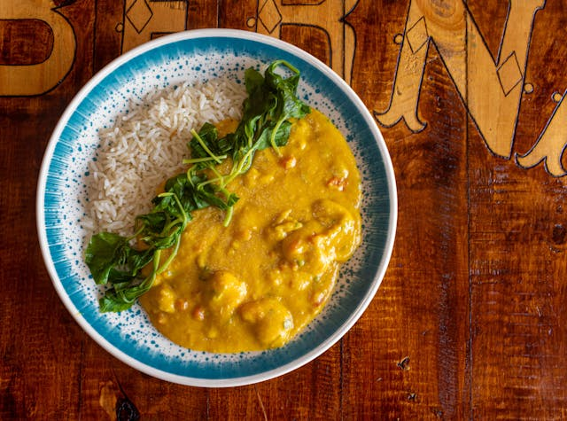

Yellow chicken curry recipe

Thai curry, a potent concoction of aromatic spices and rich coconut milk, can stir even Us with it's fiery essence and divine flavour.
Yellow curry is one of the major kinds of Thai curry that can be found outside of Thailand. It tends to be less spicy, compared to other Thai curries, as well as less oily.
Ingredients:
- Chicken thigh fillet 500g
- Coconut milk 400g
- Chicke stock 400ml
- Onion 1
- Garlic
- Ginger
- Star anise 3
- Cinnamon stick
- Spices to taste:
- Salt
- Garam masala
- Coriander powder
- Cumin powder
- Fennel powder
Steps:
- Mix the spices in a bowl
- Toast the star anise and cinnamon
- Add and cook the diced onion until soft
- Add the chiken, fry until the outside is no longer raw
- Add ginger, garlic
- Add the rest of the spice mix
- Finally add the chicken stock, coconut milk. Let it simmer for a bit until the sauce thickens
- Now it's ready to be served. Enjoy!
Return to homepage